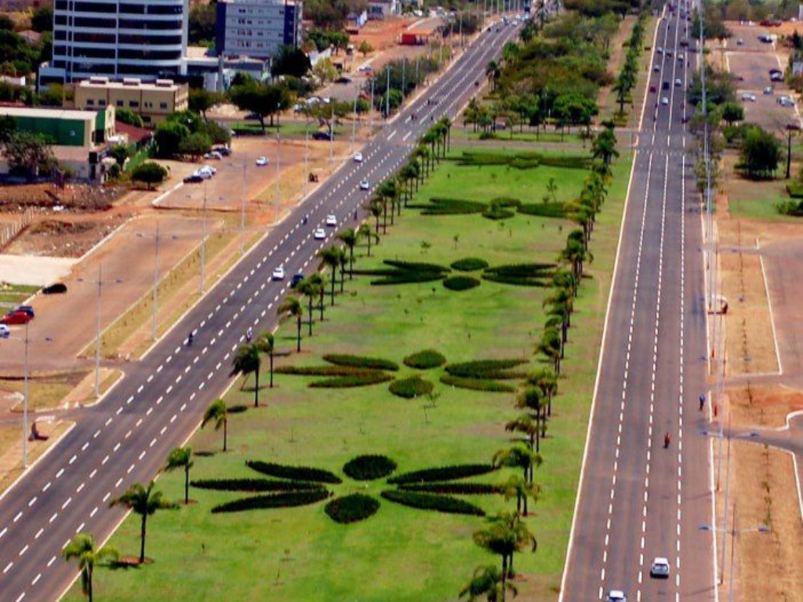

O Tocantins, estado mais jovem do Brasil emancipado de Goiás em 1988, está localizado na região Norte do país. Cortado pelos rios Tocantins e Araguaia, abriga a maior ilha fluvial do mundo, a Ilha do Bananal. Sua capital é Palmas, cidade planejada conhecida pela modernidade. A economia do estado tem base na agropecuária e na produção de grãos, enquanto o turismo se destaca pelas belezas naturais do Jalapão

Voltar